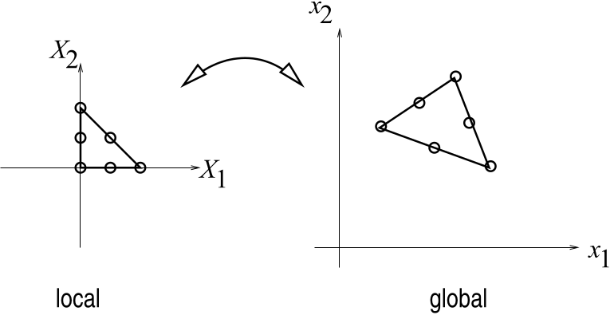
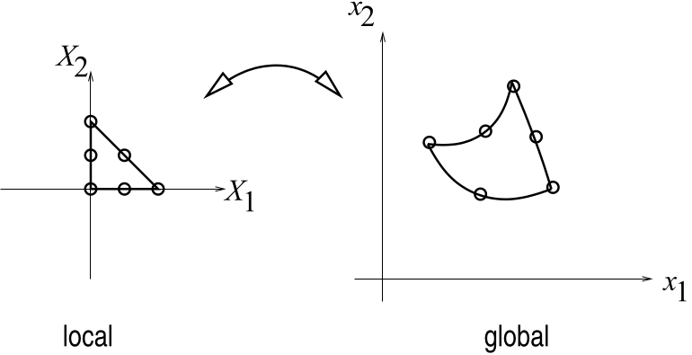
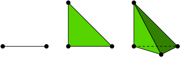

Shape Functions
Shape functions¶
Although our motivating example shows how, armed with basis functions \(\phi_i\), continuous problems reduce to discrete ones, we have yet to explicitly define such functions. However, we did implicitly define them by stating that they must satisfy the following properties
1. \(\phi_i\) is a polynomial
2. \(\phi_i(X_j) = \delta_{ij}\)
3. \(\phi_i(X) = \begin{cases}N_i^e(X) & X \in \Omega^e, \text{node} \;i\; \text{and element} \;e\; \text{are adjacent}\\ 0 & \text{otherwise}\end{cases}\)
The third property introduces \(\Omega^e\), which refers to the domain of element \(e\), i.e. the space it occupies. Naturally, meshes are made of non-overlapping geometric primitives (i.e. the "elements" \(\Omega^e\)), connected through their boundaries. This means that evaluating \(\phi_i(X)\) is achieved by the following steps. 1. Find which element \(e\) contains the point \(X\). 2. Evaluate \(N_i^e(X)\).
Fortunately, our shape functions have \(C^0\) continuity at element boundaries, meaning \(N_i^e(X) = N_i^{e'}(X)\) on the boundary between adjacent elements \(e\) and \(e'\) (due to uniqueness of interpolating polynomials). Hence, if a point \(X\) lies on the boundary between 2 or more elements, we can pick any of these elements in step 1.
We now focus on the secret sauce, the element shape functions \(N_i^e(X)\). Properties 1. and 3. state that \(\phi_i(X)\) is a polynomial and evaluates to \(N_i^e(X)\) on the element \(e\). Thus, \(N_i^e(X)\) is a polynomial on the element \(e\). Polynomials can be written as linear combinations of basis polynomials \(P_k(X)\). Suppose that \(n^e = |\text{nodes}(e)|\), then if we have \(n^e\) such basis polynomials \(P_k(X)\), and we have that $N_i^e(X) = \sum_{j \in \text{nodes}(e)} \alpha_{ij} P_j(X) $. More compactly,
where \(P(X) = \begin{bmatrix} P_1(X) & \dots & P_{n^e}(X) \end{bmatrix}^T\) and \(\alpha_i = \begin{bmatrix} \alpha_{i1} & \dots & \alpha_{in^e} \end{bmatrix}^T\). Property 2, i.e. the Kronecker delta property, thus translates into \(N_i^e(X_j) = \delta_{ij}\) on element \(e\). Substituting \(N_i^e(X_j)\) for its polynomial expansion in the Kronecker delta property yields
where \(I_{n^e \times n^e} \in \mathbb{R}^{n^e \times n^e}\) is the identity matrix. In matrix notation,
where we have conveniently numbered the nodes of element \(e\) as \(l=1,2,\dots,n^e\). This numbering choice is often referred to as the "local" indexing of the nodes of element \(e\). The "global" indexing of these same nodes refers to the actual nodal indices \(i\) corresponding to local nodal indices \(l\).
The polynomial basis generally has a quite simple analytical form. For example, taking the monomial basis in 1D for a quadratic polynomial yields \(P_1(X) = 1, P_2(X) = X, P_3(X) = X^2\). A linear monomial basis in 3D yields \(P_1(X)=1, P_2(X) = X_1, P_3(X) = X_2, P_4(X)=X_3\). These basis polynomials are thus super easy to evaluate, differentiate or integrate in code. What we really need is to find the coefficients \(\alpha_{ij}\) that will finalize our definition of the shape functions \(N_i^e(X)\). Fortunately, solving the Kronecker equation above amounts to computing the inverse of the transposed matrix of polynomials \(P^T\)
Armed with each matrix \(A\) stored for its corresponding element in an FEM computer program, we can easily evaluate \(\phi_i(X)\) by finding an element \(e\) containing point \(X\), converting global node index \(i\) into its corresponding local index \(l\), and returning \(P(X)^T \alpha_{l}\). Fortunately, these polynomial coefficient matrices \(A\) are to be precomputed only once, in parallel, for each element.
Unfortunately, \(P^T\) can easily become ill-conditioned, which makes its inversion numerically unstable, especially for higher-order polynomial basis'. This phenomenon depends on the geometry of the mesh elements, i.e. the positions of the nodes \(X_i\). Intuitively, ill-conditioning of \(P^T\) means that some of its cofficients are really large (in magnitude), and some of them are really small (in magnitude). Taking as an example the 1D quadratic monomial evaluated at some element's node with position \(X=1000\), we get that its corresponding row in \(P^T\) would be \(\begin{bmatrix}1 & 1000 & 1000000\end{bmatrix}\). Clearly, this is ill-conditioned.
To address this issue, it is common in practice to define some map \(X(\xi)\) that takes points in some reference space to the domain \(\Omega\), and its inverse \(\xi(X) = X^{-1}(\xi)\) such that we can construct shape functions in the reference space, where the geometry of the elements will yield well-conditioned \(P^T\). In fact, this concept leads to defining the so-called reference elements. The maps \(X(\xi)\) and \(\xi(X)\) are then defined per-element, and always map from and to the reference element, respectively. Reference shape functions are subsequently defined on the reference element and constructed only once. Evaluating a basis function \(\phi_i(X)\) on element \(e\) thus amounts to mapping \(X\) to \(\xi\) using element \(e\)'s inverse map \(\xi(X)\), and then evaluating the reference shape function associated with node \(i\) of element \(e\). Mathematically, assuming that \(N_l(\xi)\) is the reference shape function for domain node \(i\) associated with reference node \(l\) on the reference element, we have that
Chapter 9.3 of Hans Petter Langtangen's FEM book (highly recommend that book) provides the following pedagogical visuals, in which dots represent nodes of a quadratic FEM triangular element.
|  |  |
|---|---|
| Linear map from reference element (local) to domain element (global). | Non-linear map from reference element (local) to domain element (global). |
Lagrange elements¶
Perhaps the simplest and/or most popular type of reference element is the Lagrange element. This type of element is defined by a polynomial order \(p\) used to construct the shape functions. As described above, there must be as many polynomial basis' as nodes for the inverse of \(P^T\) to exist, i.e. \(P^T\) must be square. Lagrange elements in 3D thus define their nodes with coordinates \(\xi_l \in \left\{ \left(\frac{a}{p}, \frac{b}{p}, \frac{c}{p}\right) \right\}\)
and corresponding polynomial basis functions \(P_l \in \left\{ \xi_x^a \xi_y^b \xi_z^c \right\}\) for integer values \(0 \leq a,b,c \leq p\), where they are used as powers. In 2D, we only use \(a\) and \(b\). In 1D, we reduce further to simply using \(a\). Simplex elements, such as triangles and tetrahedra have the additional constraint \(a+b+c \leq p\), wheras line segments, quadrilaterals and hexahedra do not.
Taken once again from chapter 9.3 of Hans Petter Langtangen's FEM book, here are examples of Lagrange elements and their nodes in dimensions 1,2,3.
|  | |
|---|---|
| Linear Lagrange simplex elements. | Quadratic Lagrange simplex elements. |
Mapping from/to reference¶
Given exact reference node placements \(\xi_l\) and the polynomial basis functions \(P_l(\xi)\), we can obtain our reference shape functions \(N_l(\xi) = P(\xi)^T \alpha_l\). We can recover the map \(X(\xi)\) easily by simple interpolation of domain positions \(X_i\) of domain nodes and elements, \(i\) and \(e\), stored on corresponding reference nodes \(l\) with positions \(\xi_l\) and shape functions \(N_l(\xi)\) on the reference element. Mathematically, we write the map as
where \(X^e = \begin{bmatrix} X_1 & \dots & X_{n^e} \end{bmatrix} \in \mathbb{R}^{d \times n^e}\) are element \(e\)'s nodes' positions \(X_i\), \(N(\xi) = \begin{bmatrix} N_1(\xi) & \dots & N_{n^e}(\xi) \end{bmatrix}^T \in \mathbb{R}^{n^e}\) are the reference shape functions evaluated at \(\xi\), and \(d\) is the number of embedding dimensions for \(X_i\).
The inverse map \(\xi(X)\) is, however, not so trivial in the general case. One way to obtain \(\xi(X)\) numerically is by solving the non-linear least-squares problem
for which we can use a Gauss-Newton algorithm. If the map \(X(\xi)\) is linear, however, its jacobian \(J\) must be constant. We can choose an arbitrary point around which to perform a Taylor expansion of \(X(\xi)\), for example, the reference space's origin \(\xi_1 = 0\), which we know is mapped to \(X_1\) in Lagrange elements, revealing
If the reference element's dimensions match the domain's embedding dimensions, \(J\) is square and
Otherwise, the normal equations may be used to define it instead
Derivatives¶
Computing derivatives of basis functions \(\phi_i(X)\) also amounts to computing derivatives of shape functions \(N_i^e(X)\). Because our shape functions are now defined in reference space, we must use the chain rule of differentiation to compute \(\nabla_X N_i^e(X) = \nabla_X N_l(\xi(X))\), such that
for \(X \in \Omega^e\).
The gradient of the reference shape functions with respect to reference positions is easy enough to compute, since we just need to differentiate polynomials \(\xi_x^a \xi_y^b \xi_z^c\). The jacobian \(\nabla_X \xi(X)\) of the inverse map is, again, not so trivial in the general case. If a Gauss-Newton algorithm is used to compute \(\xi(X)\) as described above, we need to compute and accumulate gradients of the Gauss-Newton iterations by chain rule. Once again, though, if the map is linear, we can use the previous derivations of the linear inverse map to get \(\nabla_X \xi(X)\) as
for a square jacobian \(J\), and
for a non-square jacobian \(J\).
Summary¶
Basis functions \(\phi_i(X)\) are constructed piece-wise in mesh elements \(e\) adjacent to node \(i\) via element shape functions \(N_i^e(X)\). To evaluate \(\phi_i(X)\), we find element \(e\) adjacent to node \(i\) containing point \(X\), and evaluate \(N_i^e(X)\). The shape functions are polynomials which depend on the geometry of their associated element, and we compute them by inverting a matrix \(P^T\) of polynomials evaluated at element \(e\)'s nodes. To avoid ill-conditioning of the matrix inversion problem, we instead define a reference element that is well-conditioned, and construct reference shape functions \(N_l(\xi)\) there. Evaluating our basis functions in the domain then amounts to \(\phi_i(X) = N_i^e(X) = N_l(\xi(X))\), where \(\xi(X)\) is the inverse map taking domain positions \(X\) to reference positions \(\xi\), as opposed to the map \(X(\xi)\) which takes reference positions to domain positions. Gradients of basis functions can be computed by carrying out the chain rule of differentiation through \(N_l(\xi)\) and \(\xi(X)\). The specific placement of nodes and the associated basis polynomials in reference space defines the type of an FEM element. We present the classic Lagrange element as a simple yet popular choice.
Because functions discretized on an FEM mesh have a linear combination structure \(u(X) \approx \Phi^T u\), and \(u\) is a simple vector of constant (with respect to \(X\)) coefficients, differential operators \(D(\cdot)\) applied to \(u(X)\) need only be applied to the basis functions \(\phi_i(X)\) by linearity. In other words, \(L(u(X)) = \sum_i u_i L(\phi_i(X))\). Hence, the gradient \(\nabla u(X)\), for example, amounts to \(\sum_i u_i \nabla \phi_i(X)\), where we have shown how to evaluate \(\nabla \phi_i(X)\). The same applies to other differential operators, such as \(\Delta, \nabla^2, \nabla \cdot, \int \partial\), etc.